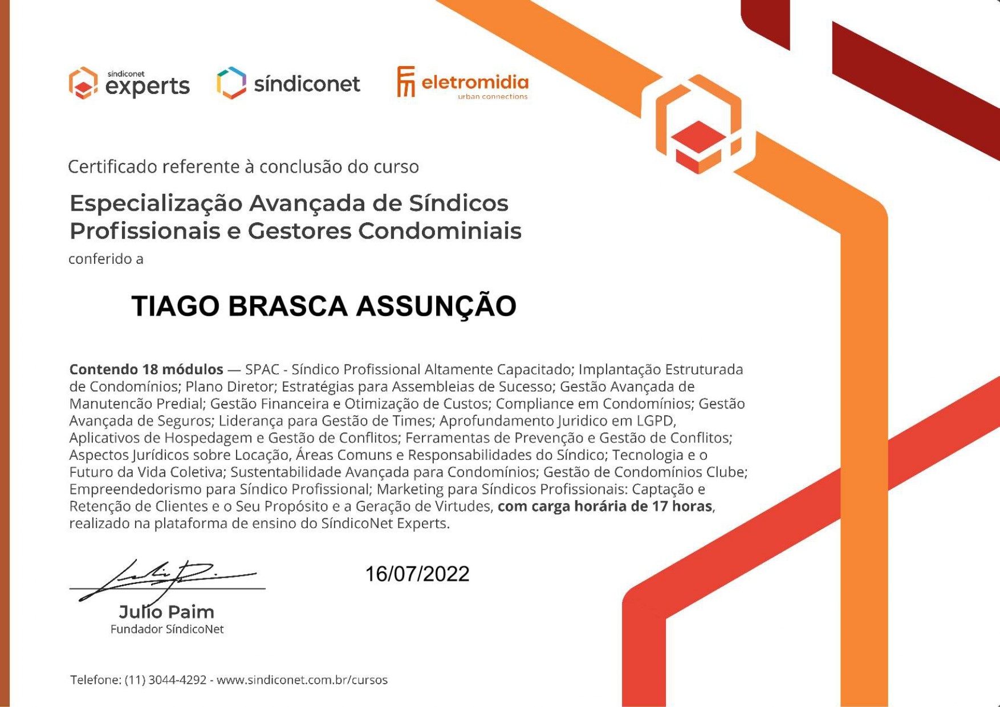
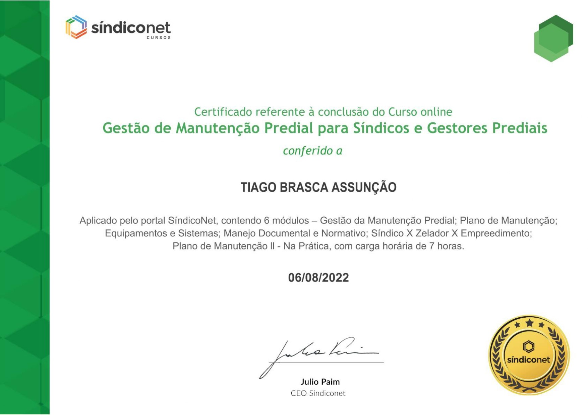

Perfil Profissional
Gestor com mais de 15 anos de experiência em operações complexas, controle rigoroso de custos, análise de contratos e liderança de equipes, somados a 6 anos de experiência prática na sindicância (2013 a 2019) e 68 horas de especialização técnica pelo SíndicoNet Experts. Atuação focada na valorização do patrimônio, regularização legal e transparência absoluta na prestação de contas.
Obras e Resultados Comprovados (2013 a 2019)
Segurança Contra Incêndio (AVCB)
Regularização completa e obtenção do AVCB após quase 10 anos de vencimento, incluindo adequação de iluminação de emergência e sinalização fotoluminescente.
Infraestrutura e Manutenção
Instalação de sistema de para-raios (SPDA), revitalização (limpeza e pintura) de fachada, impermeabilização de reservatórios e troca dos registros das prumadas de água.
Segurança e Governança
Ampliação do sistema de monitoramento por câmeras (CFTV), condução de assembleias ordinárias e extraordinárias e 100% das contas aprovadas sem ressalvas.
Acervo Documental e Comprovações
Registros reais de entregas, regularizações e mandatos exercidos na gestão condominial:
Renovação de AVCB
Regularização integral das exigências técnicas de combate a incêndio do edifício.
Eleição e Governança (2014)
Comprovação de mandato eletivo e condução formal de assembleia condominial.
Manutenção Preventiva
Controle rigoroso de cronogramas sanitários, certificados e fornecedores homologados.
Formação Técnica e Certificações (68 Horas)
Capacitação completa pelo SíndicoNet Experts cobrindo as áreas jurídica, trabalhista, financeira, administrativa e de engenharia predial (clique na imagem para ampliar):
Formação de Síndicos Profissionais e Gestores Condominiais
15 módulos cobrindo fundamentos jurídicos, assembleias sem riscos, manutenção planejada, seguros, gestão financeira, auditoria, cobrança de inadimplentes e mediação de conflitos.
PARTE 2 DE 3
Perfil Profissional
Gestor com mais de 15 anos de experiência, incluindo 6 anos como síndico (2013 a 2019) e capacitação pelo SíndicoNet Experts.
Obras e Resultados (2013–2019)
- Segurança: Regularização e emissão do AVCB.
- Infraestrutura: Instalação de SPDA, revitalização de fachada e impermeabilização.
- Governança: Ampliação do CFTV e aprovação de contas sem ressalvas.
Acervo Documental
Espaços para anexar comprovantes de AVCB, Ata de Assembleia e Ordem de Serviço.
Formação Técnica e Certificações
Certificados de Formação de Síndicos Profissionais e Especialização Avançada pelo SíndicoNet Experts.
Formação de Síndicos Profissionais e Gestores Condominiais
15 módulos cobrindo fundamentos jurídicos, assembleias sem riscos, manutenção planejada, seguros, gestão financeira, auditoria, cobrança de inadimplentes e mediação de conflitos.

Especialização Avançada de Síndicos Profissionais e Gestores Condominiais
18 módulos focados em implantação de condomínios, plano diretor, compliance e LGPD, gestão de condomínios clube, otimização de custos e liderança de equipes.

Habilidades Extraordinárias para Síndicos Profissionais
10 módulos sobre condução estratégica de assembleias, relacionamento com condôminos, conselho diretivo, administradora e funcionários.

Gestão de Manutenção Predial para Síndicos e Gestores Prediais
6 módulos sobre planos de manutenção preventiva, gestão de equipamentos e sistemas prediais, rotina com zeladoria e manejo documental normativo.

Questões Trabalhistas e eSocial em Condomínios
5 módulos abrangendo contratação, vigência de contrato de trabalho, obrigações do eSocial, reforma trabalhista e procedimentos de rescisão.

Aspectos Básicos, Avançados (e Polêmicos) do Direito Condominial
10 módulos sobre convenção de condomínio, obras, direitos e deveres, inadimplência, comportamento antissocial e responsabilidade civil e criminal do síndico.